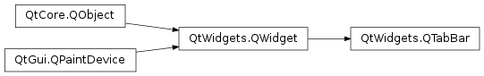
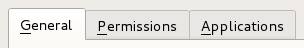
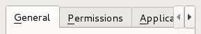

QTabBar¶
Synopsis¶
Functions¶
- def
accessibleTabName(index) - def
addTab(icon, text) - def
addTab(text) - def
autoHide() - def
changeCurrentOnDrag() - def
count() - def
currentIndex() - def
documentMode() - def
drawBase() - def
elideMode() - def
expanding() - def
iconSize() - def
initStyleOption(option, tabIndex) - def
insertTab(index, icon, text) - def
insertTab(index, text) - def
isMovable() - def
isTabEnabled(index) - def
moveTab(from, to) - def
removeTab(index) - def
selectionBehaviorOnRemove() - def
setAccessibleTabName(index, name) - def
setAutoHide(hide) - def
setChangeCurrentOnDrag(change) - def
setDocumentMode(set) - def
setDrawBase(drawTheBase) - def
setElideMode(arg__1) - def
setExpanding(enabled) - def
setIconSize(size) - def
setMovable(movable) - def
setSelectionBehaviorOnRemove(behavior) - def
setShape(shape) - def
setTabButton(index, position, widget) - def
setTabData(index, data) - def
setTabEnabled(index, arg__2) - def
setTabIcon(index, icon) - def
setTabText(index, text) - def
setTabTextColor(index, color) - def
setTabToolTip(index, tip) - def
setTabWhatsThis(index, text) - def
setTabsClosable(closable) - def
setUsesScrollButtons(useButtons) - def
shape() - def
tabAt(pos) - def
tabButton(index, position) - def
tabData(index) - def
tabIcon(index) - def
tabRect(index) - def
tabText(index) - def
tabTextColor(index) - def
tabToolTip(index) - def
tabWhatsThis(index) - def
tabsClosable() - def
usesScrollButtons()
Virtual functions¶
- def
minimumTabSizeHint(index) - def
tabInserted(index) - def
tabLayoutChange() - def
tabRemoved(index) - def
tabSizeHint(index)
Slots¶
- def
setCurrentIndex(index)
Signals¶
- def
currentChanged(index) - def
tabBarClicked(index) - def
tabBarDoubleClicked(index) - def
tabCloseRequested(index) - def
tabMoved(from, to)
Detailed Description¶
The
PySide2.QtWidgets.QTabBarclass provides a tab bar, e.g. for use in tabbed dialogs.
PySide2.QtWidgets.QTabBaris straightforward to use; it draws the tabs using one of the predefinedshapes, and emits a signal when a tab is selected. It can be subclassed to tailor the look and feel. Qt also provides a ready-madePySide2.QtWidgets.QTabWidget.Each tab has a
PySide2.QtWidgets.QTabBar.tabText(), an optionalPySide2.QtWidgets.QTabBar.tabIcon(), an optionalPySide2.QtWidgets.QTabBar.tabToolTip(), optionalPySide2.QtWidgets.QTabBar.tabWhatsThis()and optionalPySide2.QtWidgets.QTabBar.tabData(). The tabs’s attributes can be changed withPySide2.QtWidgets.QTabBar.setTabText(),PySide2.QtWidgets.QTabBar.setTabIcon(),PySide2.QtWidgets.QTabBar.setTabToolTip(),PySide2.QtWidgets.QTabBar.setTabWhatsThis()andPySide2.QtWidgets.QTabBar.setTabData(). Each tabs can be enabled or disabled individually withPySide2.QtWidgets.QTabBar.setTabEnabled().Each tab can display text in a distinct color. The current text color for a tab can be found with the
PySide2.QtWidgets.QTabBar.tabTextColor()function. Set the text color for a particular tab withPySide2.QtWidgets.QTabBar.setTabTextColor().Tabs are added using
PySide2.QtWidgets.QTabBar.addTab(), or inserted at particular positions usingPySide2.QtWidgets.QTabBar.insertTab(). The total number of tabs is given byPySide2.QtWidgets.QTabBar.count(). Tabs can be removed from the tab bar withPySide2.QtWidgets.QTabBar.removeTab(). CombiningPySide2.QtWidgets.QTabBar.removeTab()andPySide2.QtWidgets.QTabBar.insertTab()allows you to move tabs to different positions.The
PySide2.QtWidgets.QTabBar.shape()property defines the tabs’ appearance. The choice of shape is a matter of taste, although tab dialogs (for preferences and similar) invariably useRoundedNorth. Tab controls in windows other than dialogs almost always use eitherRoundedSouthorTriangularSouth. Many spreadsheets and other tab controls in which all the pages are essentially similar useTriangularSouth, whereasRoundedSouthis used mostly when the pages are different (e.g. a multi-page tool palette). The default inPySide2.QtWidgets.QTabBarisRoundedNorth.The most important part of
PySide2.QtWidgets.QTabBar‘s API is thePySide2.QtWidgets.QTabBar.currentChanged()signal. This is emitted whenever the current tab changes (even at startup, when the current tab changes from ‘none’). There is also a slot,PySide2.QtWidgets.QTabBar.setCurrentIndex(), which can be used to select a tab programmatically. The functionPySide2.QtWidgets.QTabBar.currentIndex()returns the index of the current tab,PySide2.QtWidgets.QTabBar.count()holds the number of tabs.
PySide2.QtWidgets.QTabBarcreates automatic mnemonic keys in the manner ofPySide2.QtWidgets.QAbstractButton; e.g. if a tab’s label is “&Graphics”, Alt+G becomes a shortcut key for switching to that tab.The following virtual functions may need to be reimplemented in order to tailor the look and feel or store extra data with each tab:
PySide2.QtWidgets.QTabBar.tabSizeHint()calcuates the size of a tab.PySide2.QtWidgets.QTabBar.tabInserted()notifies that a new tab was added.PySide2.QtWidgets.QTabBar.tabRemoved()notifies that a tab was removed.PySide2.QtWidgets.QTabBar.tabLayoutChange()notifies that the tabs have been re-laid out.PySide2.QtWidgets.QTabBar.paintEvent()paints all tabs.For subclasses, you might also need the
PySide2.QtWidgets.QTabBar.tabRect()functions which returns the visual geometry of a single tab.
 A tab bar shown in the Fusion widget style .  A truncated tab bar shown in the Fusion widget style. See also
-
class
PySide2.QtWidgets.QTabBar([parent=nullptr])¶ Parameters: parent – PySide2.QtWidgets.QWidgetCreates a new tab bar with the given
parent.
-
PySide2.QtWidgets.QTabBar.Shape¶ This enum type lists the built-in shapes supported by
PySide2.QtWidgets.QTabBar. Treat these as hints as some styles may not render some of the shapes. However, position should be honored.Constant Description QTabBar.RoundedNorth The normal rounded look above the pages QTabBar.RoundedSouth The normal rounded look below the pages QTabBar.RoundedWest The normal rounded look on the left side of the pages QTabBar.RoundedEast The normal rounded look on the right side the pages QTabBar.TriangularNorth Triangular tabs above the pages. QTabBar.TriangularSouth Triangular tabs similar to those used in the Excel spreadsheet, for example QTabBar.TriangularWest Triangular tabs on the left of the pages. QTabBar.TriangularEast Triangular tabs on the right of the pages.
-
PySide2.QtWidgets.QTabBar.ButtonPosition¶ This enum type lists the location of the widget on a tab.
Constant Description QTabBar.LeftSide Left side of the tab. QTabBar.RightSide Right side of the tab.
-
PySide2.QtWidgets.QTabBar.SelectionBehavior¶ This enum type lists the behavior of
PySide2.QtWidgets.QTabBarwhen a tab is removed and the tab being removed is also the current tab.Constant Description QTabBar.SelectLeftTab Select the tab to the left of the one being removed. QTabBar.SelectRightTab Select the tab to the right of the one being removed. QTabBar.SelectPreviousTab Select the previously selected tab.
-
PySide2.QtWidgets.QTabBar.accessibleTabName(index)¶ Parameters: index – PySide2.QtCore.intReturn type: unicode Returns the
PySide2.QtWidgets.QWidget.accessibleName()of the tab at positionindex, or an empty string ifindexis out of range.
-
PySide2.QtWidgets.QTabBar.addTab(text)¶ Parameters: text – unicode Return type: PySide2.QtCore.intAdds a new tab with text
text. Returns the new tab’s index.
-
PySide2.QtWidgets.QTabBar.addTab(icon, text) Parameters: - icon –
PySide2.QtGui.QIcon - text – unicode
Return type: PySide2.QtCore.intThis is an overloaded function.
Adds a new tab with icon
iconand texttext. Returns the new tab’s index.- icon –
-
PySide2.QtWidgets.QTabBar.autoHide()¶ Return type: PySide2.QtCore.bool
-
PySide2.QtWidgets.QTabBar.changeCurrentOnDrag()¶ Return type: PySide2.QtCore.bool
-
PySide2.QtWidgets.QTabBar.count()¶ Return type: PySide2.QtCore.int
-
PySide2.QtWidgets.QTabBar.currentChanged(index)¶ Parameters: index – PySide2.QtCore.int
-
PySide2.QtWidgets.QTabBar.currentIndex()¶ Return type: PySide2.QtCore.int
-
PySide2.QtWidgets.QTabBar.documentMode()¶ Return type: PySide2.QtCore.bool
-
PySide2.QtWidgets.QTabBar.drawBase()¶ Return type: PySide2.QtCore.bool
-
PySide2.QtWidgets.QTabBar.elideMode()¶ Return type: PySide2.QtCore.Qt.TextElideMode
-
PySide2.QtWidgets.QTabBar.expanding()¶ Return type: PySide2.QtCore.bool
-
PySide2.QtWidgets.QTabBar.iconSize()¶ Return type: PySide2.QtCore.QSize
-
PySide2.QtWidgets.QTabBar.initStyleOption(option, tabIndex)¶ Parameters: - option –
PySide2.QtWidgets.QStyleOptionTab - tabIndex –
PySide2.QtCore.int
Initialize
optionwith the values from the tab attabIndex. This method is useful for subclasses when they need aPySide2.QtWidgets.QStyleOptionTab, but don’t want to fill in all the information themselves.- option –
-
PySide2.QtWidgets.QTabBar.insertTab(index, icon, text)¶ Parameters: - index –
PySide2.QtCore.int - icon –
PySide2.QtGui.QIcon - text – unicode
Return type: PySide2.QtCore.intThis is an overloaded function.
Inserts a new tab with icon
iconand texttextat positionindex. Ifindexis out of range, the new tab is appended. Returns the new tab’s index.If the
PySide2.QtWidgets.QTabBarwas empty before this function is called, the inserted tab becomes the current tab.Inserting a new tab at an index less than or equal to the current index will increment the current index, but keep the current tab.
- index –
-
PySide2.QtWidgets.QTabBar.insertTab(index, text) Parameters: - index –
PySide2.QtCore.int - text – unicode
Return type: PySide2.QtCore.intInserts a new tab with text
textat positionindex. Ifindexis out of range, the new tab is appened. Returns the new tab’s index.- index –
-
PySide2.QtWidgets.QTabBar.isMovable()¶ Return type: PySide2.QtCore.bool
-
PySide2.QtWidgets.QTabBar.isTabEnabled(index)¶ Parameters: index – PySide2.QtCore.intReturn type: PySide2.QtCore.boolReturns
trueif the tab at positionindexis enabled; otherwise returnsfalse.
-
PySide2.QtWidgets.QTabBar.minimumTabSizeHint(index)¶ Parameters: index – PySide2.QtCore.intReturn type: PySide2.QtCore.QSizeReturns the minimum tab size hint for the tab at position
index.
-
PySide2.QtWidgets.QTabBar.moveTab(from, to)¶ Parameters: - from –
PySide2.QtCore.int - to –
PySide2.QtCore.int
Moves the item at index position
fromto index positionto.- from –
-
PySide2.QtWidgets.QTabBar.removeTab(index)¶ Parameters: index – PySide2.QtCore.intRemoves the tab at position
index.See also
QTabBar.SelectionBehavior
-
PySide2.QtWidgets.QTabBar.selectionBehaviorOnRemove()¶ Return type: PySide2.QtWidgets.QTabBar.SelectionBehavior
-
PySide2.QtWidgets.QTabBar.setAccessibleTabName(index, name)¶ Parameters: - index –
PySide2.QtCore.int - name – unicode
Sets the
PySide2.QtWidgets.QWidget.accessibleName()of the tab at positionindextoname.- index –
-
PySide2.QtWidgets.QTabBar.setAutoHide(hide)¶ Parameters: hide – PySide2.QtCore.boolSee also
-
PySide2.QtWidgets.QTabBar.setChangeCurrentOnDrag(change)¶ Parameters: change – PySide2.QtCore.bool
-
PySide2.QtWidgets.QTabBar.setCurrentIndex(index)¶ Parameters: index – PySide2.QtCore.int
-
PySide2.QtWidgets.QTabBar.setDocumentMode(set)¶ Parameters: set – PySide2.QtCore.bool
-
PySide2.QtWidgets.QTabBar.setDrawBase(drawTheBase)¶ Parameters: drawTheBase – PySide2.QtCore.boolSee also
-
PySide2.QtWidgets.QTabBar.setElideMode(arg__1)¶ Parameters: arg__1 – PySide2.QtCore.Qt.TextElideMode
-
PySide2.QtWidgets.QTabBar.setExpanding(enabled)¶ Parameters: enabled – PySide2.QtCore.bool
-
PySide2.QtWidgets.QTabBar.setIconSize(size)¶ Parameters: size – PySide2.QtCore.QSizeSee also
-
PySide2.QtWidgets.QTabBar.setMovable(movable)¶ Parameters: movable – PySide2.QtCore.bool
-
PySide2.QtWidgets.QTabBar.setSelectionBehaviorOnRemove(behavior)¶ Parameters: behavior – PySide2.QtWidgets.QTabBar.SelectionBehavior
-
PySide2.QtWidgets.QTabBar.setShape(shape)¶ Parameters: shape – PySide2.QtWidgets.QTabBar.ShapeSee also
-
PySide2.QtWidgets.QTabBar.setTabButton(index, position, widget)¶ Parameters: - index –
PySide2.QtCore.int - position –
PySide2.QtWidgets.QTabBar.ButtonPosition - widget –
PySide2.QtWidgets.QWidget
Sets
widgeton the tabindex. The widget is placed on the left or right hand side depending upon theposition.Any previously set widget in
positionis hidden.The tab bar will take ownership of the widget and so all widgets set here will be deleted by the tab bar when it is destroyed unless you separately reparent the widget after setting some other widget (or 0).
- index –
-
PySide2.QtWidgets.QTabBar.setTabData(index, data)¶ Parameters: - index –
PySide2.QtCore.int - data – object
Sets the data of the tab at position
indextodata.See also
- index –
-
PySide2.QtWidgets.QTabBar.setTabEnabled(index, arg__2)¶ Parameters: - index –
PySide2.QtCore.int - arg__2 –
PySide2.QtCore.bool
If
enabledis true then the tab at positionindexis enabled; otherwise the item at positionindexis disabled.- index –
-
PySide2.QtWidgets.QTabBar.setTabIcon(index, icon)¶ Parameters: - index –
PySide2.QtCore.int - icon –
PySide2.QtGui.QIcon
Sets the icon of the tab at position
indextoicon.See also
- index –
-
PySide2.QtWidgets.QTabBar.setTabText(index, text)¶ Parameters: - index –
PySide2.QtCore.int - text – unicode
Sets the text of the tab at position
indextotext.See also
- index –
-
PySide2.QtWidgets.QTabBar.setTabTextColor(index, color)¶ Parameters: - index –
PySide2.QtCore.int - color –
PySide2.QtGui.QColor
Sets the color of the text in the tab with the given
indexto the specifiedcolor.If an invalid color is specified, the tab will use the
PySide2.QtWidgets.QTabBarforeground role instead.- index –
-
PySide2.QtWidgets.QTabBar.setTabToolTip(index, tip)¶ Parameters: - index –
PySide2.QtCore.int - tip – unicode
Sets the tool tip of the tab at position
indextotip.- index –
-
PySide2.QtWidgets.QTabBar.setTabWhatsThis(index, text)¶ Parameters: - index –
PySide2.QtCore.int - text – unicode
Sets the What’s This help text of the tab at position
indextotext.- index –
-
PySide2.QtWidgets.QTabBar.setTabsClosable(closable)¶ Parameters: closable – PySide2.QtCore.bool
-
PySide2.QtWidgets.QTabBar.setUsesScrollButtons(useButtons)¶ Parameters: useButtons – PySide2.QtCore.bool
-
PySide2.QtWidgets.QTabBar.shape()¶ Return type: PySide2.QtWidgets.QTabBar.ShapeSee also
-
PySide2.QtWidgets.QTabBar.tabAt(pos)¶ Parameters: pos – PySide2.QtCore.QPointReturn type: PySide2.QtCore.intReturns the index of the tab that covers
positionor -1 if no tab coversposition;
-
PySide2.QtWidgets.QTabBar.tabBarClicked(index)¶ Parameters: index – PySide2.QtCore.int
-
PySide2.QtWidgets.QTabBar.tabBarDoubleClicked(index)¶ Parameters: index – PySide2.QtCore.int
-
PySide2.QtWidgets.QTabBar.tabButton(index, position)¶ Parameters: - index –
PySide2.QtCore.int - position –
PySide2.QtWidgets.QTabBar.ButtonPosition
Return type: Returns the widget set a tab
indexandpositionor 0 if one is not set.- index –
-
PySide2.QtWidgets.QTabBar.tabCloseRequested(index)¶ Parameters: index – PySide2.QtCore.int
-
PySide2.QtWidgets.QTabBar.tabData(index)¶ Parameters: index – PySide2.QtCore.intReturn type: object Returns the data of the tab at position
index, or a null variant ifindexis out of range.
-
PySide2.QtWidgets.QTabBar.tabIcon(index)¶ Parameters: index – PySide2.QtCore.intReturn type: PySide2.QtGui.QIconReturns the icon of the tab at position
index, or a null icon ifindexis out of range.
-
PySide2.QtWidgets.QTabBar.tabInserted(index)¶ Parameters: index – PySide2.QtCore.intThis virtual handler is called after a new tab was added or inserted at position
index.
-
PySide2.QtWidgets.QTabBar.tabLayoutChange()¶ This virtual handler is called whenever the tab layout changes.
See also
-
PySide2.QtWidgets.QTabBar.tabMoved(from, to)¶ Parameters: - from –
PySide2.QtCore.int - to –
PySide2.QtCore.int
- from –
-
PySide2.QtWidgets.QTabBar.tabRect(index)¶ Parameters: index – PySide2.QtCore.intReturn type: PySide2.QtCore.QRectReturns the visual rectangle of the tab at position
index, or a null rectangle ifindexis out of range.
-
PySide2.QtWidgets.QTabBar.tabRemoved(index)¶ Parameters: index – PySide2.QtCore.intThis virtual handler is called after a tab was removed from position
index.
-
PySide2.QtWidgets.QTabBar.tabSizeHint(index)¶ Parameters: index – PySide2.QtCore.intReturn type: PySide2.QtCore.QSizeReturns the size hint for the tab at position
index.
-
PySide2.QtWidgets.QTabBar.tabText(index)¶ Parameters: index – PySide2.QtCore.intReturn type: unicode Returns the text of the tab at position
index, or an empty string ifindexis out of range.
-
PySide2.QtWidgets.QTabBar.tabTextColor(index)¶ Parameters: index – PySide2.QtCore.intReturn type: PySide2.QtGui.QColorReturns the text color of the tab with the given
index, or a invalid color ifindexis out of range.
-
PySide2.QtWidgets.QTabBar.tabToolTip(index)¶ Parameters: index – PySide2.QtCore.intReturn type: unicode Returns the tool tip of the tab at position
index, or an empty string ifindexis out of range.
-
PySide2.QtWidgets.QTabBar.tabWhatsThis(index)¶ Parameters: index – PySide2.QtCore.intReturn type: unicode Returns the What’s This help text of the tab at position
index, or an empty string ifindexis out of range.
-
PySide2.QtWidgets.QTabBar.tabsClosable()¶ Return type: PySide2.QtCore.bool
-
PySide2.QtWidgets.QTabBar.usesScrollButtons()¶ Return type: PySide2.QtCore.bool
© 2018 The Qt Company Ltd. Documentation contributions included herein are the copyrights of their respective owners. The documentation provided herein is licensed under the terms of the GNU Free Documentation License version 1.3 as published by the Free Software Foundation. Qt and respective logos are trademarks of The Qt Company Ltd. in Finland and/or other countries worldwide. All other trademarks are property of their respective owners.